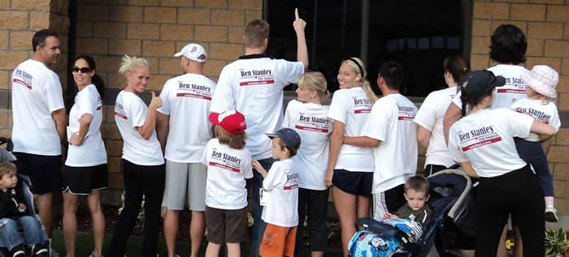

We will continue to keep you informed about important events in the municipal elections through our emails. You can sign up for them by contacting the campaign: ben@voteben.com
But here are some important dates to keep in mind:
July 12th - Meet the Candidates and Debate - Pleasant Grove Library 7-9 PM
July 27th - Free Campaign Party and BBQ 6-8 PM - Contact me (ben@voteben.com) to RSVP and get more details.
Primary Election
July 30th - Early Voting begins (at the Recorder's Office)
August 13th - Municipal Primary Election - take friends and neighbors and go vote!
General Election
September 4th at 7 PM at the PG Library - "Ask Ben Anything" - a public event where Ben is answering all sorts of different citizen questions: stop by to listen or ask whatever is on your mind.
September 18th at 7 PM at the PG Library - "Ask Ben Anything" - another public event to ask questions directly to Ben
September 20th at 10 AM at the Adobe Complex - Ben is speaking on International business issues and constitutional implications of the NSA Surveillance efforts, Snowden scandal, and the Patriot Act. Feel free to attend if you are interested in any of those topics and get in touch for more information.
October 16th from 6:30 to 9:00 at the PG Library - Candidate Debate! Join us to learn about the candidates for City Council in Pleasant Grove.
October 22nd - Early Voting begins (at the Recorder's Office)
October 30th from 7:00 to 9:00 PM at the PG Library - "Ask Ben Anything" - another public opportunity to meet Ben in person and ask your questions.
November 1st from 6:30 to 9:00 PM at the PG Library - Final Candidate Debate! Show up and hear the final arguments before you go to the polls.
November 5th - Muncipal General Election - polls are open from 7AM to 8PM.
Thanks for the support!
